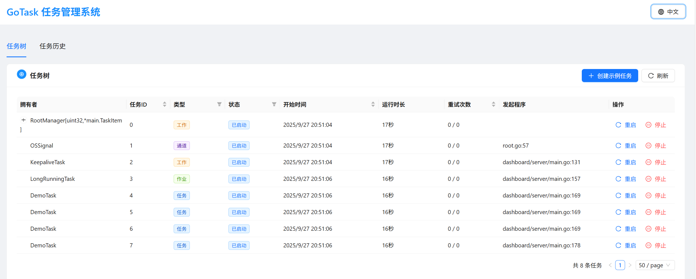

可观测性
任务树、唯一 ID、启动/停止原因、重试次数与调用点文件行号，让执行路径不再靠猜。
GoTask 是 Go 的进程内任务生命周期内核。用「任务树 + 单协程事件循环」统一管理组件的启动、运行、停止、重试、资源回收与观测——像操作系统任务管理器一样，精确控制任意粒度的逻辑。
go get github.com/langhuihui/gotask
goroutine 可以随手写，但谁创建、归谁管、何时算启动成功、失败后是否重跑、资源由谁释放——这些问题的答案，决定了系统在压力下的样子。
任务树、唯一 ID、启动/停止原因、重试次数与调用点文件行号，让执行路径不再靠猜。
子任务的 Start / Run / Dispose 与 Job.Call 闭包，都在父任务唯一协程内顺序执行。
分阶段清理顺序、自动级联销毁、关联销毁与竞态安全，解决异步系统最棘手的一题。
优雅关闭、指数退避重试、panic 兜底与钩子代际护栏，让异常路径也有确定性。
四段可交互动画，逐步演示 GoTask 的调度内核、状态机、级联销毁与重试策略。可自动播放，也可单步查看每一步对应的源码位置。
任意 goroutine 提交任务 → 输入通道 → 动态 reflect.Select 调度 → 启动 / 重试 / 回收 → 自动休眠。
job.AddTask(t)
t · *Worker
任意协程可安全提交
buffer 256 · 满则 ErrTooManyChildren
状态由 atomic.Uint32 持有，任意 goroutine 可安全读取；鸭子类型接口决定任务怎样运行。
job.AddTask(t)
OS 信号沿任务树传播停止原因；父任务逐个等待子任务销毁完成，再释放自身资源。
checkRetry() 按 base × 2^(n-1) 计算等待，可设上限、可无限重试，也可被停止原因立即终止。
interval = base × 2^(n-1)base = 1s · MaxRetryInterval 可封顶 · -1 表示无限重试以下能力均来自核心库实现，而非概念承诺。
运行时增减 case，突破 Go 静态 select 限制；删除用 swap-delete，65535 上限与输入通道背压双重保护。
event_loop.goStart / Run / Dispose 与 Job.Call 闭包都在父任务唯一协程内串行执行，共享状态无需加锁。
Job.Call按业务 Key 去重；父任务停止时逐个 Stop 子任务并等待 shutdown，Work 容器可持续长驻。
job.goPreDispose → 等待子任务 → Dispose → resources → OnDispose；io.Closer、Recyclable 与关联任务自动释放。
task.go · dispose()OnStart / OnDispose / OnStop / Using；晚注册补跑队列与 hookGen 代际护栏，杜绝钩子丢失与重试串台。
hookGenSetRetry 指数退避、MaxRetryInterval 封顶、-1 无限重试；ErrTaskComplete / ErrExit 等停止原因立即收敛。
checkRetry()TaskFunc[T] 与 Then / Map / Chain、Parallel / ParallelMap、WithRetry / WithTimeout，增量接入且无 breaking change。
generic.goID、StartReason、StopReason、RetryCount、slog 结构化日志；四处 recover 兜底，-tags taskpanic 切换调试直抛。
stability用 RootManager 作为根，任务只需实现自己关心的钩子方法。
// 一切皆任务：嵌入 task.Task，按需实现生命周期方法
package main
import (
"time"
"github.com/langhuihui/gotask"
)
type Worker struct {
task.Task
}
func (w *Worker) Start() error {
w.Info("worker ready")
return nil
}
func (w *Worker) Run() error {
<-w.Done() // 协作式停止：Context 被取消时退出
return nil
}
func (w *Worker) Dispose() {
w.Info("worker disposed")
}
type Manager = task.RootManager[uint32, *Worker]
func main() {
root := &Manager{}
root.Init() // 注册 OS 信号，建立任务树根
worker := &Worker{}
root.AddTask(worker) // 由父任务启动，勿直接调 Start()
worker.WaitStopped()
}// 增量式泛型编排层：强类型、可组合、无 breaking change
source := task.TaskFunc[int](func(ctx context.Context) (int, error) {
return 21, nil
})
pipeline := task.Then(source, func(ctx context.Context, v int) (string, error) {
return fmt.Sprintf("value:%d", v*2), nil
})
result, err := pipeline.Run(context.Background())
// 并行聚合：首个错误会 cancel 兄弟任务
values, _ := task.Parallel(context.Background(),
func(context.Context) (int, error) { return 1, nil },
func(context.Context) (int, error) { return 2, nil },
)
named, _ := task.ParallelMap(context.Background(), map[string]task.TaskFunc[int]{
"alpha": func(context.Context) (int, error) { return 1, nil },
"beta": func(context.Context) (int, error) { return 2, nil },
})
// 策略装饰器可任意叠加
retried := task.WithRetry(source, task.RetryPolicy{
MaxRetry: 3,
RetryInterval: time.Second,
})
timed := task.WithTimeout(retried, 2*time.Second)// 重试策略、可观测字段、资源与钩子，全部在任务上声明
func newWorker() *Worker {
w := &Worker{}
w.SetRetry(5, time.Second) // 指数退避，最多 5 次
w.SetMaxRetryInterval(30 * time.Second) // 退避封顶
w.SetDescription("role", "ingest") // Dashboard 可观测字段
w.Using(conn) // io.Closer / Recyclable 自动回收
w.OnStop(otherTask) // 关联停止
w.OnStart(func() { w.Info("online") })
w.OnDispose(func() { w.Info("cleaned") })
return w
}
// 把对共享状态的修改串行化到父任务的事件循环
job.Call(func() {
shared["key"] = value // 无需加锁
})
// 后代事件广播，可对接历史落库与监控
job.OnDescendantsDispose(func(t task.ITask) {
saveHistory(t.GetTaskID(), t.StopReason())
})核心库提供后代事件广播与可观测字段；示例 Dashboard 用 OnDescendantsDispose 把历史写入 SQLite 并可视化。

Owner、状态、层级、启动时间、重试次数与发起程序调用点。
面板直接对指定任务调用停止 / 重启，验证生命周期控制粒度。
按 ownerType、taskType、sessionId、parentId 与时间范围筛选分页查询。
./dashboard/start.sh 构建前端并托管，后端 Go + SQLite，前端 React + TypeScript。
GoTask 不是分布式任务队列，也不假装是操作系统。它解决的是单个 Go 进程内的组件生命周期问题。
若把目标定义为「在单进程内模拟具有强杀、强隔离、精确资源控制的操作系统」，那是 Go 运行时与地址空间模型的硬边界；需要强杀时，应把任务放入独立进程交由 supervisor 管理。
零第三方依赖、MIT 协议、中英双语文档与 10 课渐进式教程。
go get github.com/langhuihui/gotask